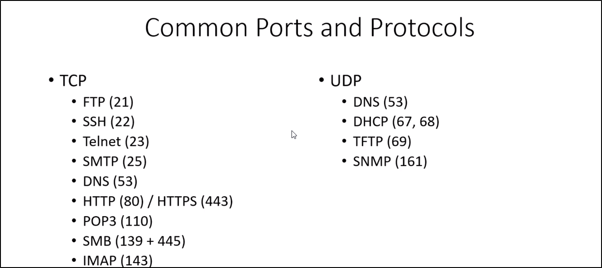

**** TCP ******
FTP : file transfer protocal .
SSH : secure shell (encrypted ) remote working
Telnet : unencrypted remote working
SMTP , POP3 , IMAP these are connected to mail .
DNS ( domain name sysytem ): it convert domain name to ip address .
HTTP/HTTPS : hyper text transfer protocal secure web protocal
SMB : these are common port used in windows , these are related to file share .(wannacry)
****** UDP *****
DNS
DHCP :
TFTP (trival FTP):
SNMP: simple network managemnet protocal : this is normally seen in networks